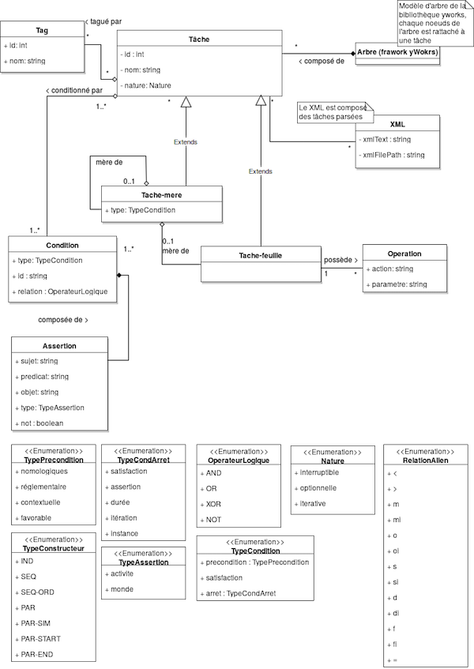

Notre applications s’appuie sur une architecture Modèle - Vue - Contrôleur. Le cadre de développement que nous avons eu pour ce projet a été l’IDE de JetBrains IntellJi, le langage utilisé est JAVA et nous utilisons des éléments d’interfaces JavaFX. Vous trouverez ci-dessous une brève présentation de chacune des composantes de l’application.
La vue est composée de trois parties principales : le graphe, l’éditeur de XML et l’onglet d’édition des tâches.
Pour la gestion du graphe des tâches nous utilisons la bibliothèque yFiles de yWorks . Cette bibliothèque extrêmement complète propose des versions d’essaie de 60 jours et nous permet très nombreuses interactions. Nous avons ainsi pu implémenté l’affichage des tâches selon plusieurs layout (hiérarchique, arbre, organique où orthogonale), l’ajout de tâche et la création de liens entre les différentes tâches directement depuis l’interface. Cette bibliothèque nous permet également d’implémenter des fonctions permettant de centrer le graphe (bouton centrer), de zoomer sur le graphe et bien d’autres interactions.
Concernant l’éditeur de XML, nous utilisons une bibliothèque réalisée par Tomas Mikula qui permet de formater le texte selon la syntaxe XML dans zone de texte . Nous utilisons plus précisément un élément développé en exemple pour mettre de la couleur en fonction de la syntaxe pour le XML.
Le modèle a plus ou moins été imposé par la forme du XML que le logiciel doit fournir. Nous en avons tiré le modèle que vous pouvez observer sur le schéma UML. Chaque tâche qu’elle soit feuille ou mère est représenté par un objet Task, par un noeud de l’arbre et par un code XML.
Le contrôleur fait le lien entre la vue et le modèle. Il fait aussi référence au contrôleur exposé par yWork pour le graphique : GraphControl. Le contrôle n’a pas l'intelligence de l’application. C’est lui qui fait simplement la passerelle entre ce qui est affiché dans la vue et les données (dans notre cas les tâches).